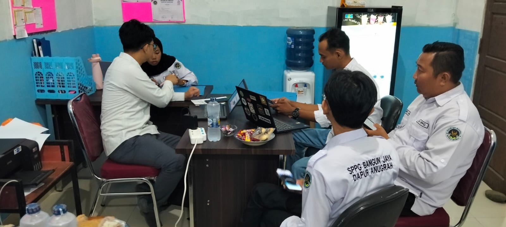
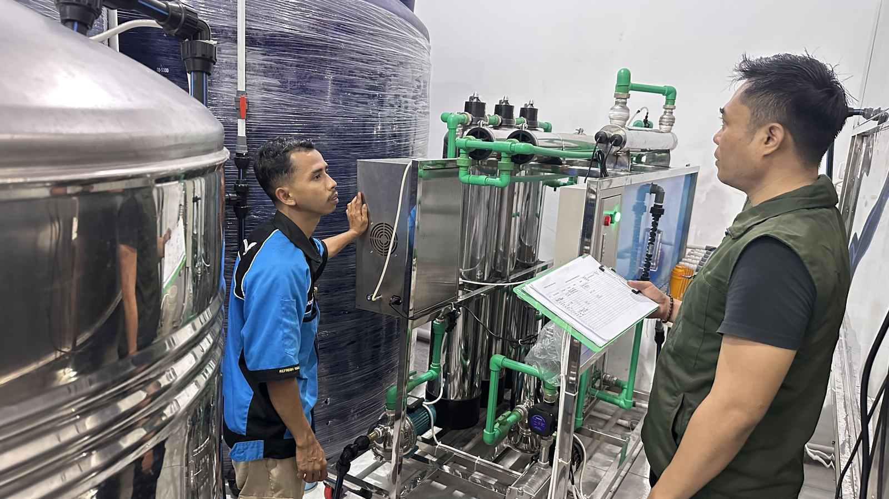
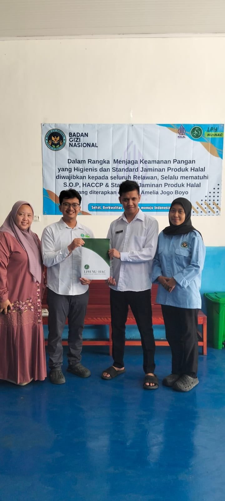

Sertifikasi halal · Skema reguler BPJPH
Sertifikat halal Anda, diurus sampai terbit.
Pendampingan sertifikasi halal skema reguler BPJPH, dari audit dokumen hingga sertifikat terbit.
Untuk dapur produksi massal, rumah potong unggas, industri pangan, kosmetik, dan bahan kimia.
PT Signature Halal Indonesia
Signature Halal berawal dari praktik pendampingan sertifikasi halal yang personal, kini bertumbuh menjadi badan usaha yang melayani lebih banyak pelaku usaha di seluruh Indonesia.
Kami membantu pelaku usaha memahami dan menuntaskan kewajiban sertifikasi halal sesuai UU Jaminan Produk Halal, tanpa proses yang membingungkan. Setiap klien mendapat pendampingan yang disesuaikan dengan skala usaha dan kompleksitas produknya. Bukan template yang sama untuk semua orang.
Fokus kami ada pada skema reguler yang diawasi BPJPH: industri pangan skala menengah-besar, rumah potong unggas, dapur produksi massal, kosmetik, dan bahan kimia.
- Nama badan usaha
- PT Signature Halal Indonesia
- Bentuk usaha
- PT Perorangan
- Lingkup layanan
- Pendampingan sertifikasi halal skema reguler (BPJPH)
- Wilayah kerja
- Jakarta, seluruh Indonesia & luar negeri
Penyusunan dokumen dan audit, dikerjakan di tempat
Pendampingan berjalan bersama tim Anda di fasilitas produksi, bukan lewat pertukaran berkas dari jauh.



Pendampingan sertifikasi halal skema reguler
Satu penawaran harga terpadu untuk setiap klien, disesuaikan dengan kompleksitas produk dan fasilitas produksi, tanpa rincian biaya yang membingungkan di awal.
-
Audit kesiapan
Pemeriksaan dokumen dan proses produksi, lalu pemetaan kesenjangan terhadap persyaratan BPJPH.
-
Penyusunan SJPH
Sistem Jaminan Produk Halal disusun sesuai skala dan jenis usaha, bukan dokumen salinan.
-
Pengajuan & pemeriksaan
Pengajuan lewat sistem resmi BPJPH dan pendampingan saat pemeriksaan lembaga halal.
-
Sampai sertifikat terbit
Tindak lanjut hasil pemeriksaan hingga penetapan kehalalan dan penerbitan sertifikat.
Jenis produk yang wajib bersertifikat halal
- Makanan & minuman
- Obat, produk biologi & alat kesehatan
- Kosmetik
- Produk kimiawi
- Produk rekayasa genetik
- Barang gunaan yang dipakai atau dimanfaatkan
- Jasa penyembelihan, pengolahan & penyimpanan
- Jasa pengemasan, distribusi & penyajian
Delapan tahap menuju sertifikat
Kami memetakan proses sertifikasi menjadi tahapan yang jelas, sehingga Anda tahu persis di mana posisi pengajuan Anda setiap saat.
Persiapan
-
Konsultasi & asesmen awal
Memahami produk, proses produksi, dan kesiapan dokumen usaha Anda.
-
Audit kesiapan
Pemetaan kesenjangan antara kondisi usaha saat ini dan persyaratan BPJPH.
-
Penyusunan SJPH
Menyusun Sistem Jaminan Produk Halal sesuai skala dan jenis usaha.
-
Kelengkapan dokumen
Menyiapkan seluruh dokumen pendukung yang dipersyaratkan.
Pengajuan sampai terbit
-
Pengajuan permohonan
Mengajukan permohonan sertifikasi ke BPJPH melalui sistem resmi.
-
Pemeriksaan lembaga
Mendampingi proses pemeriksaan oleh lembaga pemeriksa halal.
-
Sidang fatwa
Menindaklanjuti hasil pemeriksaan hingga tahap penetapan kehalalan.
-
Penerbitan sertifikat
Sertifikat halal terbit dan siap digunakan pada kemasan atau dokumen usaha Anda.
Pendampingan yang personal, bukan sekadar transaksi
Pendampingan langsung, bukan diwakilkan
Anda berkomunikasi langsung dengan penyelia halal yang menangani berkas Anda, bukan berpindah-pindah kontak.
Berpengalaman di ekosistem halal nasional
Terlibat aktif dalam ekosistem sertifikasi halal di Indonesia, memahami regulasi dari sisi teknis maupun praktik lapangan.
Satu penawaran, harga jelas
Kami memberikan satu penawaran harga terpadu di awal, tanpa biaya tersembunyi yang muncul di tengah proses.
Posisi berkas selalu dilaporkan
Anda menerima kabar posisi pengajuan di tiap tahap, tanpa harus menanyakannya lebih dulu.
Tiga puluh satu usaha, empat belas kota
Kami menjaga kerahasiaan identitas klien. Berikut gambaran pendampingan yang berjalan sejak September 2024.
Segmen usaha
- Dapur produksi massal (SPPG/MBG)
- 27
- Makanan
- 2
- Minuman
- 1
- Jasa
- 1
Posisi berkas saat ini
- Penyusunan dokumen
- 5
- Verifikasi BPJPH
- 1
- Menunggu audit
- 1
- Sertifikat terbit
- 24
Wilayah pendampingan
- Jakarta Timur
- Jakarta Utara
- Jakarta Selatan
- Bekasi
- Tangerang Selatan
- Bogor
- Subang
- Purwakarta
- Cirebon
- Brebes
- Cilacap
- Lubuklinggau Selatan
- Lubuklinggau Timur
- Labuhan Batu Selatan
Konsultasikan kebutuhan sertifikasi halal usaha Anda
Cara tercepat adalah WhatsApp. Biasanya kami balas di hari yang sama, dan sesi konsultasi awal tidak dikenakan biaya.
- signaturehalal@gmail.com
- @signaturehalal
- Wilayah kerja
- Jakarta, seluruh Indonesia & luar negeri
Kantor Jakarta Pusat
Gedung Jaya Building, Sarinah
Jl. M.H. Thamrin No.12, RT.2/RW.1, Kb. Sirih, Kec. Menteng, Kota Jakarta Pusat, DKI Jakarta
Buka di Google MapsKunjungan dengan perjanjian terlebih dahulu.
Pesan Anda sudah dibuka di WhatsApp.
Tinggal tekan kirim di aplikasi WhatsApp. Kalau jendela tidak terbuka, hubungi kami langsung di 0813-4364-0048.